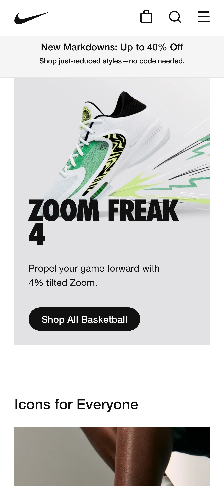
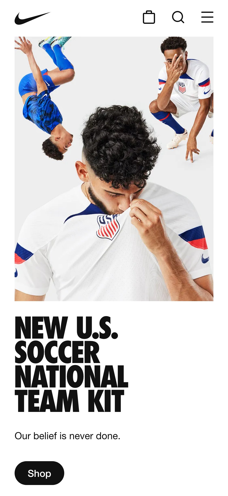
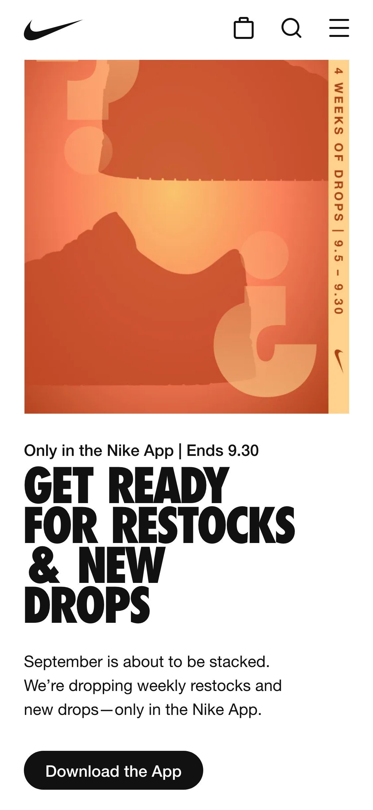

Visual Hierarchy
Visual Hierarchy is instantly evident when arriving to Nike's website. The contrast of the bright product images with a plain and clean background lets the viewer know what Nike is trying to showcase and emphasize. The typography also demostrates hierarchy with sizing and weight of the font. Using the bigger and bold font for the most important, then sizing down and thinning the text helps the viewer to easily flow through the information Nike is trying to portray.
Contrast
Contrast is heavily displayed with the use of color. The images are colorful and bright. The design elements are basic black and white, because of this simple contrast it helps balance out the site. It also creates interest. Contrast can also be found in the typography. Like mentioned above, this contrast helps the viewer to view the site and know what is the most important items to view first.
Alignment
Alignment is used strongly in the overall design of the site. A clean left alignment is used throughout the page with the design elements. By only using one use of alignment keeps the site clean, organize, and balanced throughout. Alignment can be noticed with the subject of the images. This clean overall look assists the viewer to read and view all the information.
